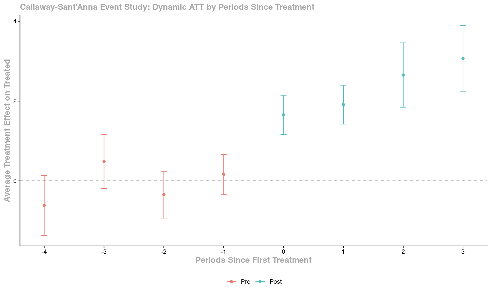
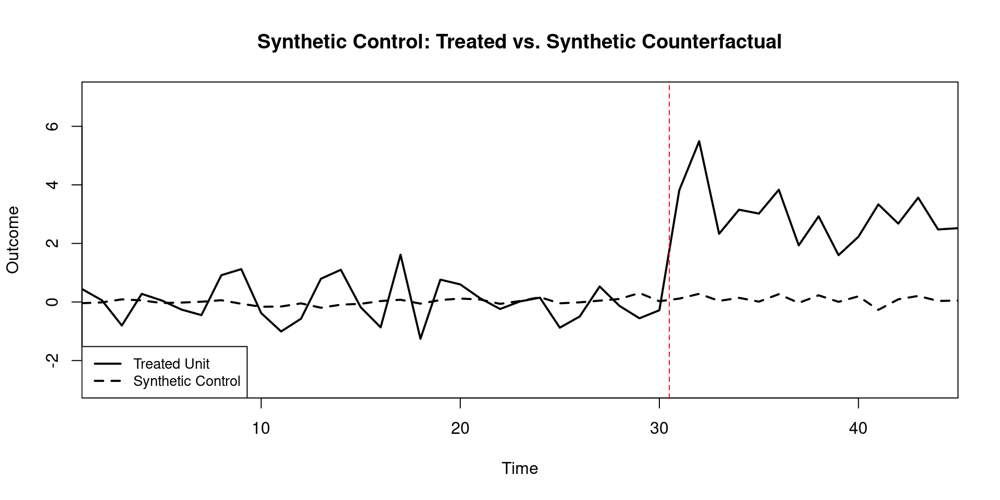
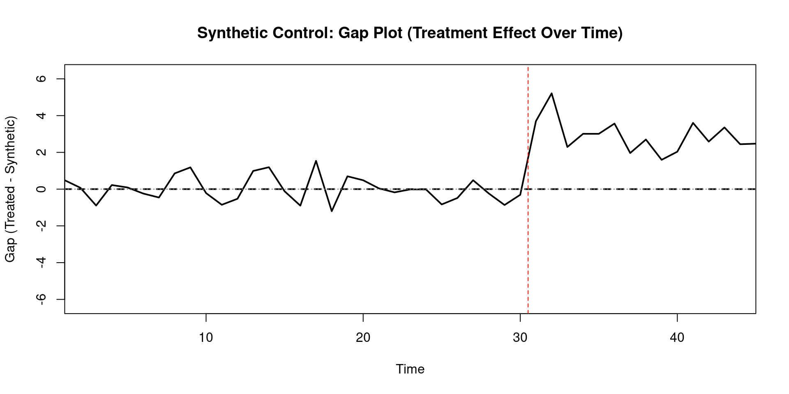
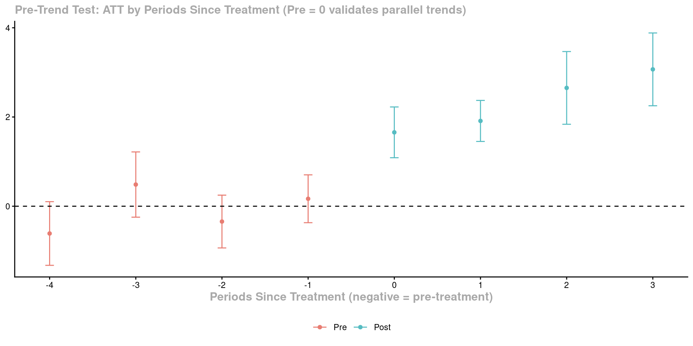
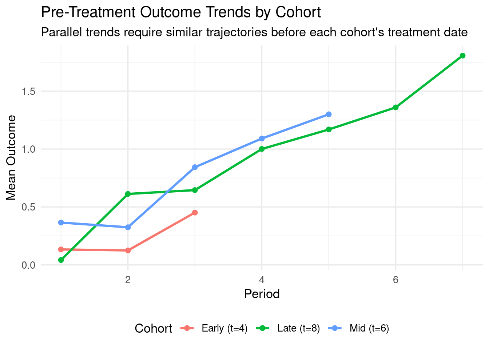

Code
packages <- c(
"tidyverse",
"fixest",
"did",
"DRDID",
"bacondecomp",
"Synth",
"ggplot2",
"patchwork",
"modelsummary"
)

The most powerful quasi-experimental designs in applied causal inference exploit variation across multiple units and multiple time periods simultaneously. When some units are exposed to an intervention and others are not — and when we can observe both groups before and after the intervention — the control units provide a direct empirical estimate of what would have happened to the treated units in the absence of treatment. This comparative logic underlies three families of methods covered in this chapter.
Difference-in-Differences (DiD) with modern staggered-adoption estimators addresses settings where treatment timing varies across units. Two-way fixed effects (TWFE) is the workhorse panel regression, but recent econometric work (Callaway & Sant’Anna 2021; Sun & Abraham 2021; Goodman-Bacon 2021) has shown that naive TWFE produces biased estimates under heterogeneous treatment effects — cohort-based estimators are now the recommended standard. Synthetic Control addresses the single treated unit setting: a weighted combination of control units is constructed to match the treated unit’s pre-intervention trajectory, providing a more transparent and assumption-explicit counterfactual than DiD.
The classical 2×2 DiD estimator compares the change in outcomes over time for a treated group vs. a control group:
\[ \hat{\tau}^{\text{DiD}} = \underbrace{(\bar{Y}^T_{\text{post}} - \bar{Y}^T_{\text{pre}})}_{\text{treatment group change}} - \underbrace{(\bar{Y}^C_{\text{post}} - \bar{Y}^C_{\text{pre}})}_{\text{control group change}} \]
Two-Way Fixed Effects (TWFE) regression:
\[ Y_{it} = \alpha_i + \lambda_t + \tau D_{it} + \mathbf{X}_{it}^\top \boldsymbol{\beta} + \varepsilon_{it} \]
where \(\alpha_i\) are unit FEs (absorb time-invariant heterogeneity) and \(\lambda_t\) are time FEs (absorb common shocks).
The staggered adoption problem. When units adopt treatment at different times (staggered rollout), the TWFE coefficient \(\hat{\tau}\) is a weighted average of all possible 2×2 DiD comparisons — including forbidden comparisons where early-treated units serve as controls for later-treated units. Under heterogeneous treatment effects, these negative weights can cause \(\hat{\tau}\) to be biased or even sign-reversed.
Callaway & Sant’Anna (2021) solution. Estimate group-time average treatment effects \(ATT(g, t)\) separately for each cohort \(g\) (units first treated at the same time) and time period \(t\):
\[ ATT(g, t) = \mathbb{E}[Y_t(g) - Y_t(\infty) \mid G_g = 1] \]
where \(Y_t(\infty)\) is the counterfactual outcome for cohort \(g\) in period \(t\) had they never been treated. These are then aggregated to overall ATT using user-specified weights.
Parallel trends assumption (modern form):
\[ \mathbb{E}[Y_t(\infty) - Y_{t-1}(\infty) \mid G_g = 1] = \mathbb{E}[Y_t(\infty) - Y_{t-1}(\infty) \mid C = 1] \]
for all \(g > t\) (pre-treatment periods), where \(C\) denotes the never-treated comparison group.
| Model | Formula | Controls for | When to use |
|---|---|---|---|
| One-way FE (unit) | \(Y_{it} = \alpha_i + \tau D_{it} + \varepsilon_{it}\) | Time-invariant unit heterogeneity | When key confounders are time-stable |
| Two-way FE | \(Y_{it} = \alpha_i + \lambda_t + \tau D_{it} + \varepsilon_{it}\) | Unit heterogeneity + common time shocks | Standard DiD baseline |
| Dynamic FE (GMM) | \(Y_{it} = \rho Y_{i,t-1} + \alpha_i + \tau D_{it} + \varepsilon_{it}\) | Above + lagged outcomes | When \(Y_{t-1}\) is a predictor (Nickell bias requires Arellano-Bond) |
For settings with one treated unit and \(J\) potential donor controls, the synthetic control \(\hat{Y}_{1t}^N = \sum_{j=2}^{J+1} w_j^* Y_{jt}\) is constructed by choosing weights \(w_j^* \geq 0\), \(\sum w_j^* = 1\) to minimize the pre-intervention fit:
\[ \min_{\mathbf{w}} \sum_{t=1}^{T_0} \left( Y_{1t} - \sum_{j=2}^{J+1} w_j Y_{jt} \right)^2 \quad \text{s.t.} \quad w_j \geq 0, \sum_j w_j = 1 \]
The causal effect at time \(t > T_0\) (post-intervention) is:
\[ \hat{\alpha}_{1t} = Y_{1t} - \hat{Y}_{1t}^N = Y_{1t} - \sum_{j=2}^{J+1} w_j^* Y_{jt} \]
Inference via permutation: There is no asymptotic theory (only one treated unit). Significance is assessed by computing synthetic controls for every donor unit and asking: how large is the treated unit’s post-intervention gap relative to the distribution of placebo gaps?
packages <- c(
"tidyverse",
"fixest",
"did",
"DRDID",
"bacondecomp",
"Synth",
"ggplot2",
"patchwork",
"modelsummary"
)#| warning: false
#| error: false
new_packages <- packages[!(packages %in% installed.packages()[,"Package"])]
if(length(new_packages)) install.packages(new_packages)invisible(lapply(packages, function(pkg) {
suppressPackageStartupMessages(library(pkg, character.only = TRUE))
}))cat("Successfully loaded packages:\n")Successfully loaded packages: [1] "package:modelsummary" "package:patchwork" "package:Synth"
[4] "package:bacondecomp" "package:DRDID" "package:did"
[7] "package:fixest" "package:lubridate" "package:forcats"
[10] "package:stringr" "package:dplyr" "package:purrr"
[13] "package:readr" "package:tidyr" "package:tibble"
[16] "package:ggplot2" "package:tidyverse" "package:stats"
[19] "package:graphics" "package:grDevices" "package:utils"
[22] "package:datasets" "package:methods" "package:base" We simulate a staggered adoption panel: 300 units across 10 periods, with three treatment cohorts adopting in periods 4, 6, and 8. Treatment effects grow over time (dynamic heterogeneity), which will cause naive TWFE to be biased.
N_units <- 300
N_periods <- 10
# Treatment cohorts: periods 4, 6, 8 (100 units each) + 100 never-treated
cohort_timing <- c(rep(4, 100), rep(6, 100), rep(8, 100), rep(Inf, 100))
panel_df <- expand_grid(
unit = 1:N_units,
period = 1:N_periods
) %>%
mutate(
cohort = cohort_timing[unit],
# Unit and time fixed effects
unit_fe = rnorm(N_units, sd = 2)[unit],
time_fe = 0.2 * period,
# Treatment indicator
treated = as.integer(period >= cohort),
# Heterogeneous dynamic treatment effect: grows with time since treatment
treat_duration = pmax(period - cohort, 0),
tau_true = case_when(
cohort == 4 ~ 2.0 + 0.5 * treat_duration, # Early adopters: large growing effect
cohort == 6 ~ 1.5 + 0.3 * treat_duration, # Mid adopters: moderate effect
cohort == 8 ~ 1.0 + 0.2 * treat_duration, # Late adopters: smaller effect
TRUE ~ 0
),
Y = unit_fe + time_fe + tau_true * treated + rnorm(N_units * N_periods, sd = 1.5)
)
cat("Panel dataset summary:\n")Panel dataset summary: Units: 300 | Periods: 10 | Observations: 3000cat(" Cohort distribution:\n") Cohort distribution:
4 6 8
100 100 100 # Naive TWFE: treatment indicator
twfe_naive <- feols(Y ~ treated | unit + period,
data = panel_df,
cluster = ~unit)
cat("=== Naive TWFE Estimate ===\n")=== Naive TWFE Estimate ===OLS estimation, Dep. Var.: Y
Observations: 3,000
Fixed-effects: unit: 300, period: 10
Standard-errors: Clustered (unit)
Estimate Std. Error t value Pr(>|t|)
treated 0.93482 0.104664 8.93166 < 2.2e-16 ***
---
Signif. codes: 0 '***' 0.001 '**' 0.01 '*' 0.05 '.' 0.1 ' ' 1
RMSE: 1.5037 Adj. R2: 0.73857
Within R2: 0.023483
Naive TWFE: 0.935cat("(True average ATT varies by cohort and duration — single number misleads)\n")(True average ATT varies by cohort and duration — single number misleads)The Bacon decomposition decomposes the TWFE coefficient into its constituent 2×2 DiD comparisons, revealing the weights assigned to each comparison — including potentially negative weights.
# Bacon decomposition requires a binary treatment timing variable
# Create first-treatment-period variable (NA for never-treated)
panel_bacon <- panel_df %>%
mutate(
first_treat = ifelse(is.infinite(cohort), 0, cohort),
id = unit
)
bacon_out <- bacon(Y ~ treated,
data = panel_bacon,
id_var = "id",
time_var = "period") type weight avg_est
1 Earlier vs Later Treated 0.5 2.04587
2 Later vs Earlier Treated 0.5 -0.17623cat("=== Bacon Decomposition ===\n")=== Bacon Decomposition ===print(bacon_out) treated untreated estimate weight type
2 6 4 0.3009381 0.1785714 Later vs Earlier Treated
3 8 4 -0.8059501 0.2142857 Later vs Earlier Treated
4 4 6 2.0659874 0.1071429 Earlier vs Later Treated
6 8 6 0.2879071 0.1071429 Later vs Earlier Treated
7 4 8 2.4808767 0.2142857 Earlier vs Later Treated
8 6 8 1.5118030 0.1785714 Earlier vs Later Treated# CS estimator: group-time ATTs
cs_est <- att_gt(
yname = "Y",
tname = "period",
idname = "unit",
gname = "cohort", # first treatment period (Inf → 0 for never-treated)
data = panel_df %>% mutate(cohort = ifelse(is.infinite(cohort), 0, cohort)),
control_group = "nevertreated",
est_method = "reg"
)
cat("=== Group-Time ATT(g,t) Summary ===\n")=== Group-Time ATT(g,t) Summary ===summary(cs_est)
Call:
att_gt(yname = "Y", tname = "period", idname = "unit", gname = "cohort",
data = panel_df %>% mutate(cohort = ifelse(is.infinite(cohort),
0, cohort)), control_group = "nevertreated", est_method = "reg")
Reference: Callaway, Brantly and Pedro H.C. Sant'Anna. "Difference-in-Differences with Multiple Time Periods." Journal of Econometrics, Vol. 225, No. 2, pp. 200-230, 2021. <https://doi.org/10.1016/j.jeconom.2020.12.001>, <https://arxiv.org/abs/1803.09015>
Group-Time Average Treatment Effects:
Group Time ATT(g,t) Std. Error [95% Simult. Conf. Band]
4 2 -0.5793 0.3183 -1.4535 0.2949
4 3 0.2940 0.2753 -0.4621 1.0501
4 4 1.8154 0.3021 0.9855 2.6453 *
4 5 2.3766 0.2866 1.5894 3.1638 *
4 6 2.6522 0.3154 1.7859 3.5185 *
4 7 3.0678 0.3128 2.2086 3.9271 *
6 2 -0.6112 0.2952 -1.4222 0.1997
6 3 0.4858 0.2540 -0.2121 1.1836
6 4 -0.1074 0.3014 -0.9353 0.7205
6 5 0.0404 0.2877 -0.7499 0.8306
6 6 1.4966 0.3020 0.6670 2.3261 *
6 7 1.4472 0.2998 0.6238 2.2706 *
---
Signif. codes: `*' confidence band does not cover 0
P-value for pre-test of parallel trends assumption: 0.32516
Control Group: Never Treated, Anticipation Periods: 0
Estimation Method: Outcome Regression# Simple overall ATT (weighted average of all ATT(g,t))
cs_overall <- aggte(cs_est, type = "simple")
cat("=== CS Overall ATT ===\n")=== CS Overall ATT ===print(cs_overall)
Call:
aggte(MP = cs_est, type = "simple")
Reference: Callaway, Brantly and Pedro H.C. Sant'Anna. "Difference-in-Differences with Multiple Time Periods." Journal of Econometrics, Vol. 225, No. 2, pp. 200-230, 2021. <https://doi.org/10.1016/j.jeconom.2020.12.001>, <https://arxiv.org/abs/1803.09015>
ATT Std. Error [ 95% Conf. Int.]
2.1426 0.1834 1.7831 2.5021 *
---
Signif. codes: `*' confidence band does not cover 0
Control Group: Never Treated, Anticipation Periods: 0
Estimation Method: Outcome Regression# Dynamic aggregation (by periods since treatment)
cs_dynamic <- aggte(cs_est, type = "dynamic")
cat("\n=== CS Dynamic ATT (by periods since treatment) ===\n")
=== CS Dynamic ATT (by periods since treatment) ===print(cs_dynamic)
Call:
aggte(MP = cs_est, type = "dynamic")
Reference: Callaway, Brantly and Pedro H.C. Sant'Anna. "Difference-in-Differences with Multiple Time Periods." Journal of Econometrics, Vol. 225, No. 2, pp. 200-230, 2021. <https://doi.org/10.1016/j.jeconom.2020.12.001>, <https://arxiv.org/abs/1803.09015>
Overall summary of ATT's based on event-study/dynamic aggregation:
ATT Std. Error [ 95% Conf. Int.]
2.322 0.202 1.9261 2.7179 *
Dynamic Effects:
Event time Estimate Std. Error [95% Simult. Conf. Band]
-4 -0.6112 0.2870 -1.3642 0.1417
-3 0.4858 0.2569 -0.1881 1.1597
-2 -0.3434 0.2234 -0.9295 0.2428
-1 0.1672 0.1904 -0.3324 0.6667
0 1.6560 0.1870 1.1655 2.1464 *
1 1.9119 0.1856 1.4250 2.3988 *
2 2.6522 0.3068 1.8475 3.4569 *
3 3.0678 0.3127 2.2475 3.8882 *
---
Signif. codes: `*' confidence band does not cover 0
Control Group: Never Treated, Anticipation Periods: 0
Estimation Method: Outcome Regressionggdid(cs_dynamic,
title = "Callaway-Sant'Anna Event Study: Dynamic ATT by Periods Since Treatment",
ylab = "Average Treatment Effect on Treated",
xlab = "Periods Since First Treatment")
The Sun-Abraham estimator uses interaction-weighted (IW) regression, also robust to heterogeneous treatment effects.
# Sun-Abraham via fixest sunab() function
panel_sa <- panel_df %>%
mutate(
cohort_sa = ifelse(is.infinite(cohort), 0, as.integer(cohort))
)
sa_est <- feols(
Y ~ sunab(cohort_sa, period) | unit + period,
data = panel_sa,
cluster = ~unit
)
cat("=== Sun-Abraham Estimator Summary ===\n")=== Sun-Abraham Estimator Summary ===OLS estimation, Dep. Var.: Y
Observations: 3,000
Fixed-effects: unit: 300, period: 10
Standard-errors: Clustered (unit)
Estimate Std. Error t value Pr(>|t|)
period::-7 2.782504 0.331981 8.381518 0.0000000000000020730 ***
period::-6 3.361821 0.295789 11.365614 < 2.2e-16 ***
period::-5 2.830218 0.223898 12.640645 < 2.2e-16 ***
period::-4 1.906569 0.203787 9.355685 < 2.2e-16 ***
period::-3 1.567444 0.190507 8.227756 0.0000000000000059365 ***
period::-2 0.622656 0.206654 3.013043 0.0028076605483357839 **
period::0 0.707024 0.208893 3.384622 0.0008079240666068779 ***
period::1 0.295172 0.115931 2.546102 0.0113949278336850663 *
period::2 0.021817 0.175724 0.124155 0.9012757498899353070
period::3 1.050602 0.296967 3.537781 0.0004676050493083701 ***
... 9 variables were removed because of collinearity
(period::-3:cohort::4, period::-2:cohort::4 and 7 others [full set in
$collin.var])
---
Signif. codes: 0 '***' 0.001 '**' 0.01 '*' 0.05 '.' 0.1 ' ' 1
RMSE: 1.39676 Adj. R2: 0.773
Within R2: 0.157447=== Estimator Comparison ===Naive TWFE: 0.935Callaway-Sant'Anna: 2.143 (SE: 0.183)Sun-Abraham: NAcat("\nNaive TWFE underestimates because of negative weighting from forbidden comparisons.\n")
Naive TWFE underestimates because of negative weighting from forbidden comparisons.We replicate a staggered DiD analysis using employment data from the loedata package (Card & Krueger FastFood dataset).
library(loedata)
data("Fastfood")
# Prepare for CS estimator
ff_did <- Fastfood %>%
mutate(
id = as.integer(factor(id)),
period_num = ifelse(after == 0, 1, 2),
first_treat = ifelse(nj == 1, 2, 0), # NJ treated in period 2
treat_indicator = nj * after
) %>%
filter(!is.na(fte))
cat("Dataset for DiD:\n")Dataset for DiD: Restaurants: 410 | Periods: 2 | NJ (treated): 321 | PA (control): 77# TWFE
ff_twfe <- feols(fte ~ treat_indicator | id + period_num,
data = ff_did, cluster = ~id)
# CS (2-period setting, equivalent to 2x2 DiD)
ff_cs <- att_gt(
yname = "fte",
tname = "period_num",
idname = "id",
gname = "first_treat",
data = ff_did,
control_group = "nevertreated",
est_method = "ipw"
)
ff_cs_agg <- aggte(ff_cs, type = "simple")
cat("=== Fastfood Employment DiD Results ===\n")=== Fastfood Employment DiD Results ===TWFE estimate: 2.750 (SE: 1.338)Callaway-Sant'Anna: 2.750 (SE: 1.388)cat("\nCard & Krueger original estimate: +2.75 FTE\n")
Card & Krueger original estimate: +2.75 FTE# Parameters: 1 treated + 20 donors, 30 pre + 15 post periods
J <- 20 # donor units
T_sc <- 45 # total periods
T0_sc <- 30 # pre-intervention periods
# Shared factors + idiosyncratic noise
factors <- matrix(rnorm(T_sc * 3, sd = 1), nrow = T_sc)
# Donor weights (synthetic control will try to match these)
true_w <- c(0.35, 0.30, 0.20, rep(0.15 / (J - 3), J - 3))
# Generate donor series
donors <- sapply(1:J, function(j) {
loadings <- rnorm(3, mean = true_w[j], sd = 0.1)
factors %*% loadings + rnorm(T_sc, sd = 0.5)
})
# Generate treated unit: matches donors pre, has effect of 3 units post
treated_loadings <- rnorm(3, mean = 0.3, sd = 0.05)
y_treated <- factors %*% treated_loadings + rnorm(T_sc, sd = 0.5)
y_treated[(T0_sc + 1):T_sc] <- y_treated[(T0_sc + 1):T_sc] + 3.0 # True effect = 3
# Combine
sc_df <- as_tibble(donors) %>%
set_names(paste0("unit_", 2:(J + 1))) %>%
mutate(
unit_1 = as.numeric(y_treated),
time = 1:T_sc
) %>%
pivot_longer(cols = -time, names_to = "unit", values_to = "Y") %>%
mutate(unit_id = as.integer(str_extract(unit, "\\d+")))
cat("Synthetic Control dataset:\n")Synthetic Control dataset: Units: 21 (1 treated + 20 donors) Periods: 45 (pre: 30, post: 15)# Prepare data for Synth
sc_wide <- sc_df %>%
pivot_wider(id_cols = time, names_from = unit_id, values_from = Y,
names_prefix = "Y") %>%
as.data.frame()
dataprep_out <- dataprep(
foo = sc_df %>% rename(unit.num = unit_id, year = time) %>% as.data.frame(),
predictors = "Y",
predictors.op = "mean",
time.predictors.prior = 1:T0_sc,
dependent = "Y",
unit.variable = "unit.num",
time.variable = "year",
treatment.identifier = 1,
controls.identifier = 2:(J + 1),
time.optimize.ssr = 1:T0_sc,
time.plot = 1:T_sc
)
synth_out <- synth(dataprep_out)

=== Top Synthetic Control Donor Weights ===[1] 0.086 0.081 0.075 0.061 0.058# Post-period gap (treatment effect estimate)
Y_treated_post <- as.numeric(dataprep_out$Y1plot[(T0_sc + 1):T_sc])
Y_synthetic_post <- as.numeric(dataprep_out$Y0plot[(T0_sc + 1):T_sc,] %*%
synth_out$solution.w)
gap_post <- Y_treated_post - Y_synthetic_post
cat(sprintf("\nAverage synthetic control effect (true = 3.0): %.3f\n", mean(gap_post)))
Average synthetic control effect (true = 3.0): 2.903# Pre-trends test: all pre-treatment CS estimates should be near zero
cs_pretest <- att_gt(
yname = "Y",
tname = "period",
idname = "unit",
gname = "cohort",
data = panel_df %>% mutate(cohort = ifelse(is.infinite(cohort), 0, cohort)),
control_group = "nevertreated",
est_method = "reg"
)
# Plot pre-period estimates (should cluster around 0)
ggdid(aggte(cs_pretest, type = "dynamic"),
title = "Pre-Trend Test: ATT by Periods Since Treatment (Pre = 0 validates parallel trends)",
xlab = "Periods Since Treatment (negative = pre-treatment)")
# Check balance of pre-treatment Y across cohorts
balance_check <- panel_df %>%
filter(period < cohort | is.infinite(cohort)) %>%
mutate(cohort_lab = case_when(
cohort == 4 ~ "Early (t=4)",
cohort == 6 ~ "Mid (t=6)",
cohort == 8 ~ "Late (t=8)",
TRUE ~ "Never Treated"
)) %>%
group_by(cohort_lab, period) %>%
summarise(Y_mean = mean(Y), .groups = "drop")
ggplot(balance_check, aes(x = period, y = Y_mean, color = cohort_lab)) +
geom_line(linewidth = 1.1) +
geom_point(size = 2) +
labs(
title = "Pre-Treatment Outcome Trends by Cohort",
subtitle = "Parallel trends require similar trajectories before each cohort's treatment date",
x = "Period", y = "Mean Outcome",
color = "Cohort"
) +
theme_minimal(base_size = 13) +
theme(legend.position = "bottom")
Panel and quasi-experimental comparative methods offer the strongest observational causal identification available without randomization — provided their key assumptions hold. Key takeaways:
On TWFE and its limits. Two-way fixed effects regression is the workhorse of panel causal inference but is biased under heterogeneous treatment effects in staggered adoption settings. The Goodman-Bacon decomposition reveals the source of bias: forbidden comparisons where already-treated units serve as controls. The Callaway-Sant’Anna and Sun-Abraham estimators fix this by aggregating clean group-time effects.
On synthetic control. For single treated unit settings, synthetic control provides a more transparent and verifiable counterfactual than regression adjustment. The pre-intervention fit quality is directly observable — unlike the parallel trends assumption in DiD, which is only partially testable. Inference via permutation placebo tests is the correct approach; there is no asymptotic theory for the standard synthetic control.
On diagnostics. Every comparative panel study should report: (a) an event study plot showing pre-treatment coefficients near zero; (b) a Bacon decomposition for TWFE (to show negative weights are absent or minimal); (c) a balance table on pre-treatment covariates; and (d) sensitivity to the choice of comparison group (never-treated vs. not-yet-treated).
| Resource | Description |
|---|---|
| Callaway & Sant’Anna (2021) | J. Econometrics — group-time ATT estimator |
| Sun & Abraham (2021) | J. Econometrics — interaction-weighted DiD |
| Goodman-Bacon (2021) | J. Econometrics — TWFE decomposition |
| Abadie et al. (2010) | JASA — synthetic control method |
did package |
Callaway & Sant’Anna R implementation |
fixest package |
Bergé — high-performance FE regression |
Synth package |
Abadie, Diamond, Hainmueller — synthetic control in R |
| Roth et al. (2023) | JEL — “What’s Trending in DiD?” review |